<br>
#### Week 1: 2D Design & Cutting
Tutorial

The tutorial I watched introduces you to the line tool, arc tool and dimension tool. I used all three tools to make this shape. I used the dimension tool to specify the lengths, diameters and angles of the shape.

The tutorial then teaches you how to use construction lines, circles and the tangent constraint. Following the tutorial, I made construction lines and placed two circles of different sizes on the same horizontal construction line. I made two lines that connected the two circles, making sure to not apply the tangent constraint on them while I was making them. I then used the tangent constraint on the two lines, making them barely touch the circles. I deleted any extra lines poking out between the tangent line and circle.
//////////////////////////////////////////////////////////////////
Modeling Household Objects
Chess Piece
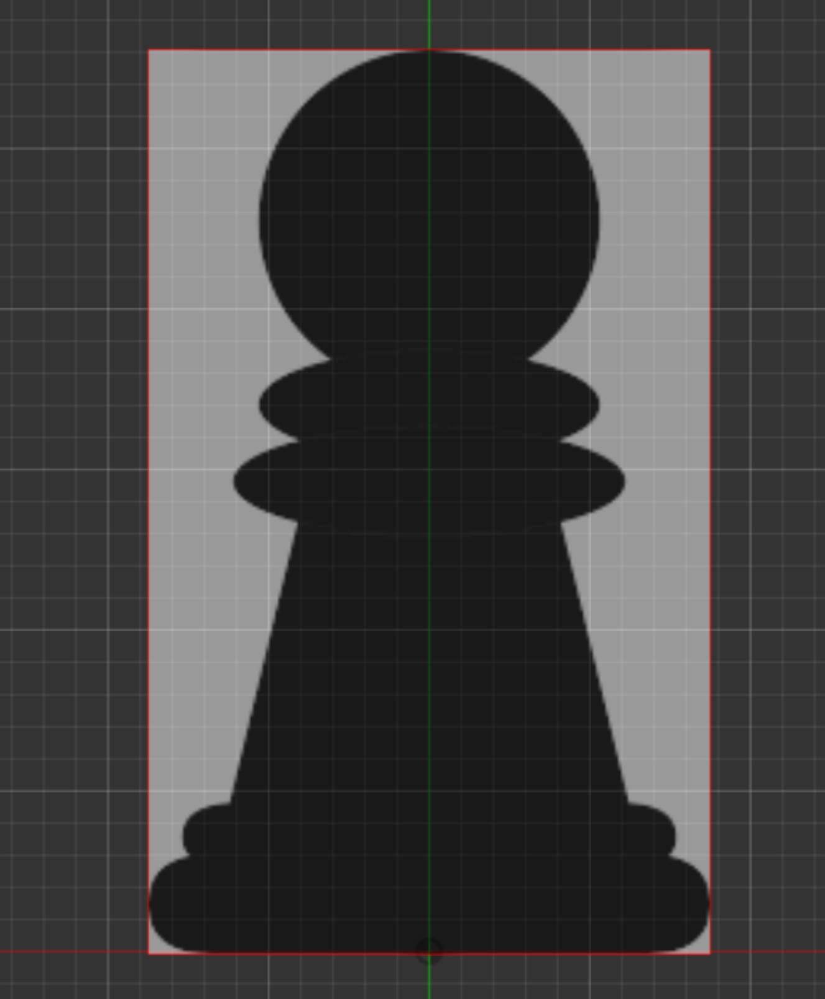
Added canvas for chess piece. I used a .png I found online because my phone's camera lens distorts the appearance of the chess piece when I try to take a photo of it.
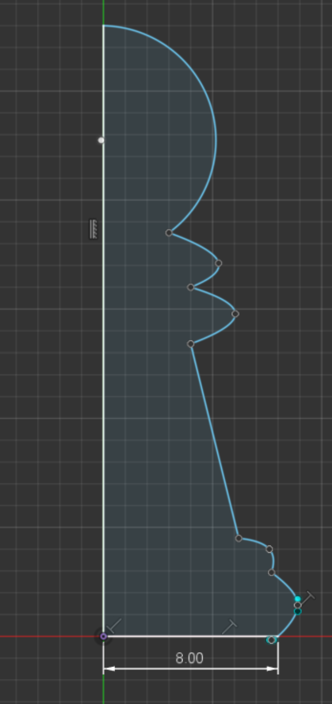
Traced canvas w/ arc & fit point spline tools. Used dimension tool to scale bottom of chess piece to half of the 1.6cm diameter I measured - so 0.8cm.
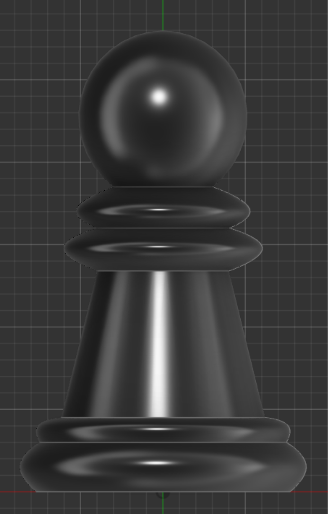
Used revolve tool to revolve the piece 360 degrees.
/////////////////////////////////////////////////////////////////
Lego Brick
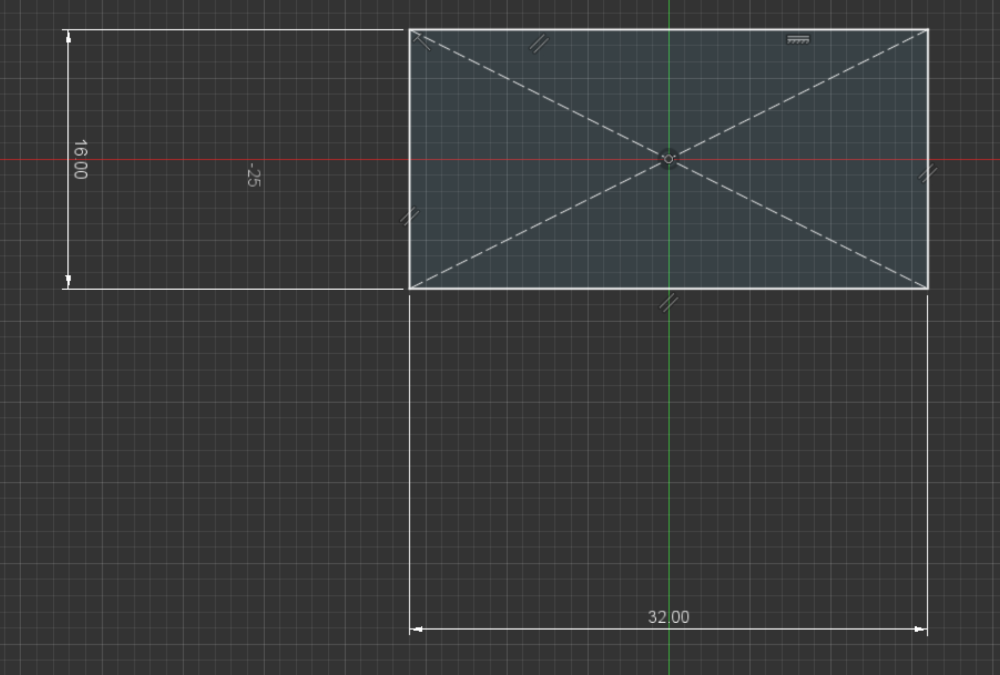
Created new sketch > line tool > sketch perimeter of brick. Used dimension tool to apply measured lengths.
<img src="./lego2.png" width="370px">
Extruded by measured height.
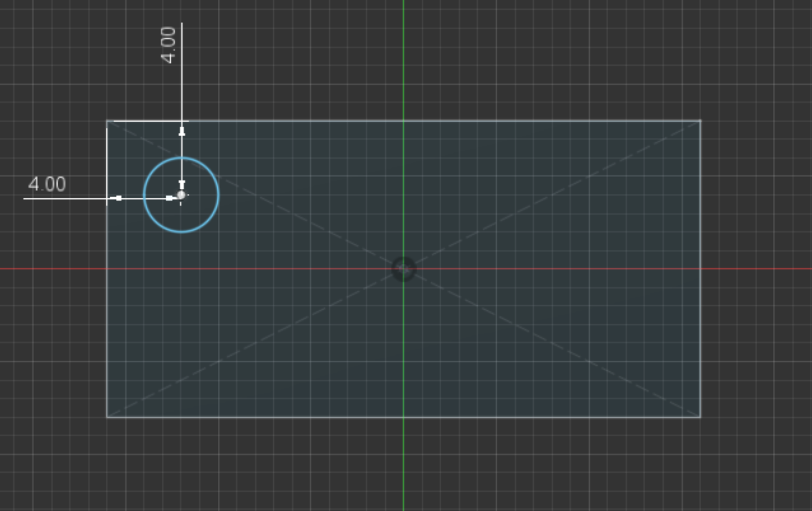
Created circles on top of brick that are 4mm wide and 4mm apart from each side.
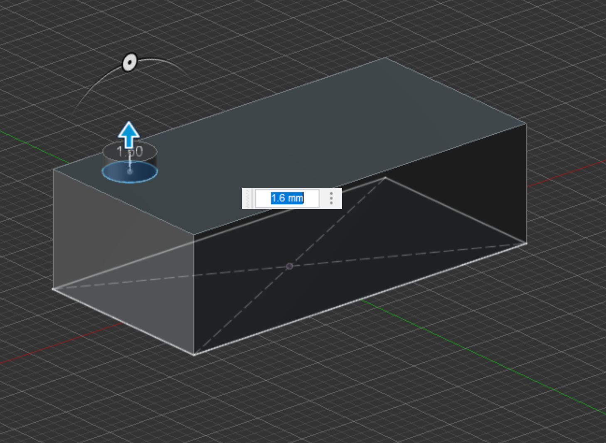
Extruded circle by the measured ~1.6mm height.
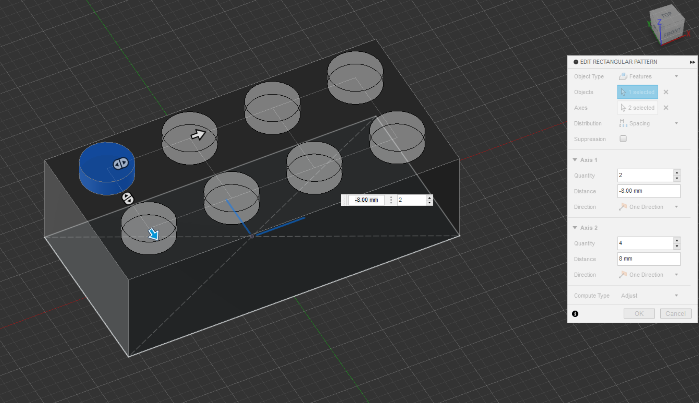
Used rectangular pattern tool to make 2x4 rows of equally-spaced circles that are 8mm apart.
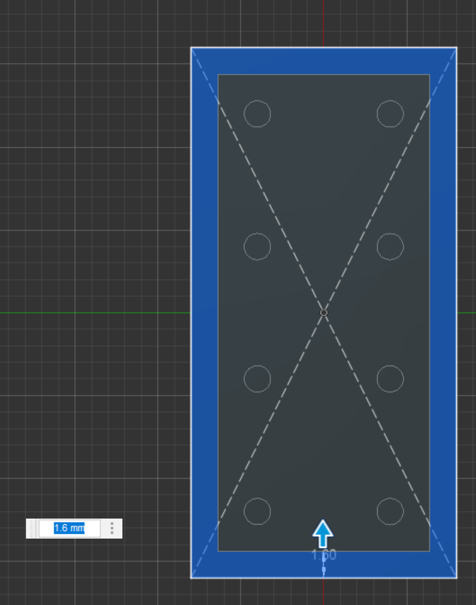
Used shell tool and hollow out the bottom of the brick towards the inside, leaving a wall with the measured ~1.6mm width.
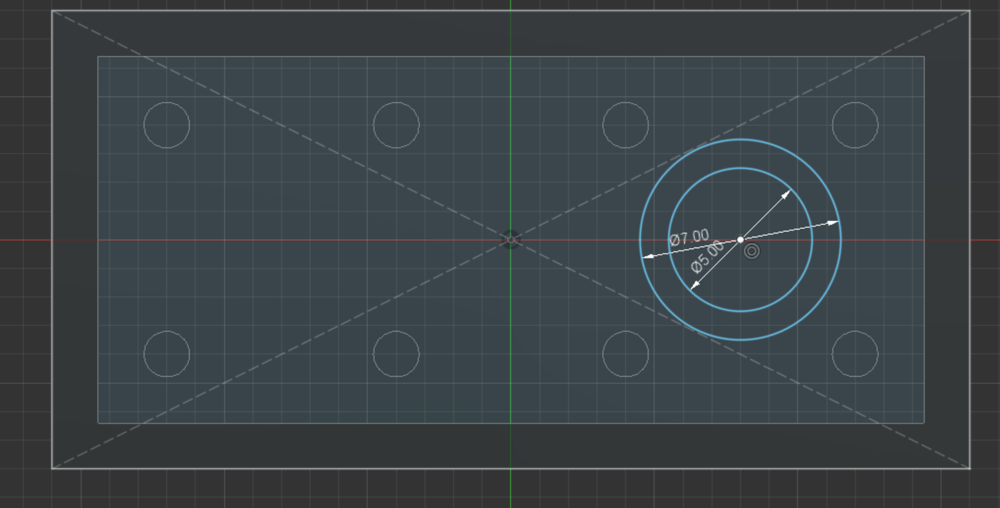
Made two circles. The one on the outside is ~7mm; the one on the inside is ~5mm.
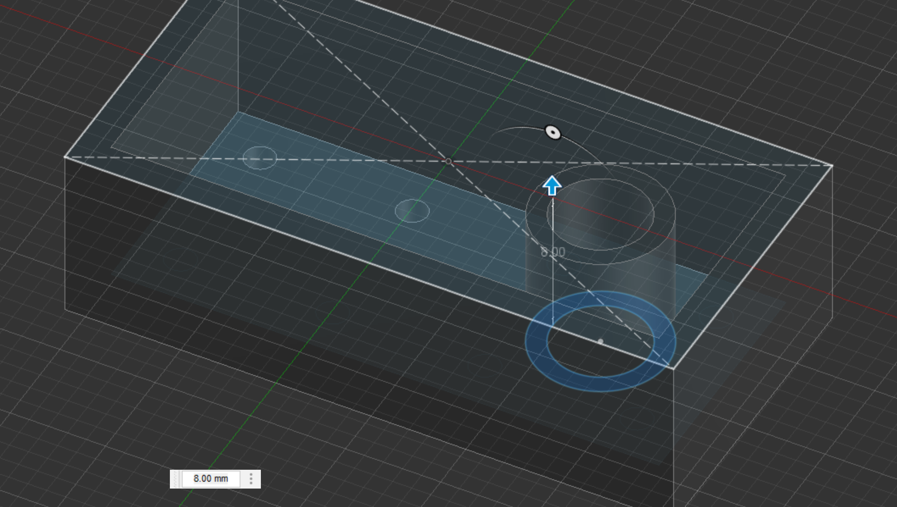
Extruded the space between the two circles by the measured ~8mm.
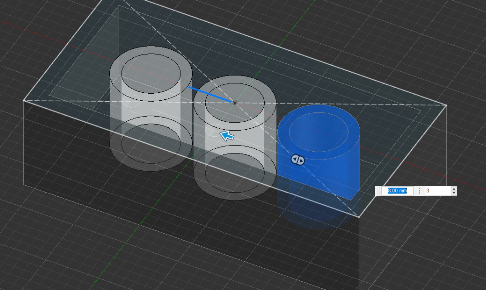
Used the rectangular pattern tool to make one row of three, spaced ~8mm apart.
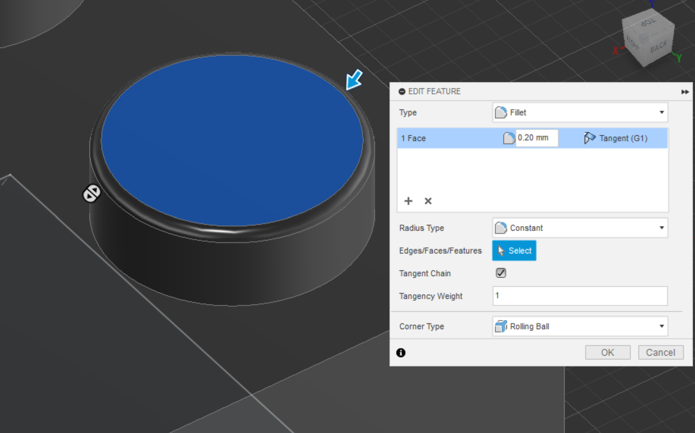
I decided to filet the tops of the circles. I selected the top faces of the extruded circles one by one and fileted them. It would have been quicker if I had fileted the top of the circle before I made the rectangular pattern - I'll keep this in mind next time around.
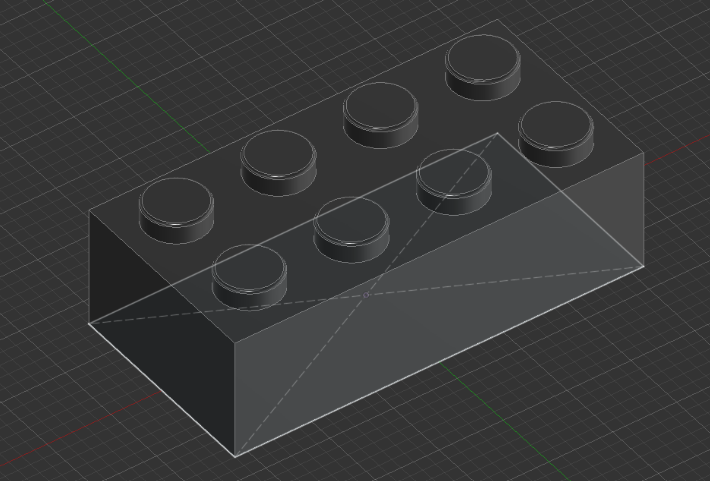
The full Lego piece.
//////////////////////////////////////////////////////////////////////////////////////////////
Pressfit Assignment
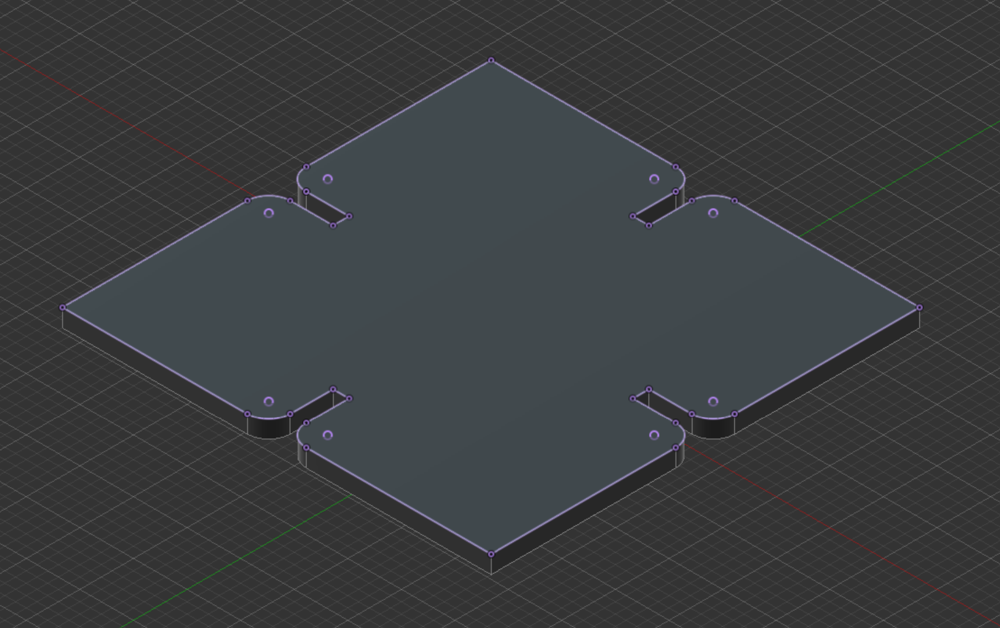
This is the 3D render (?) of my pressfit construction that I made in Fusion360 by following Kassia's tutorial.
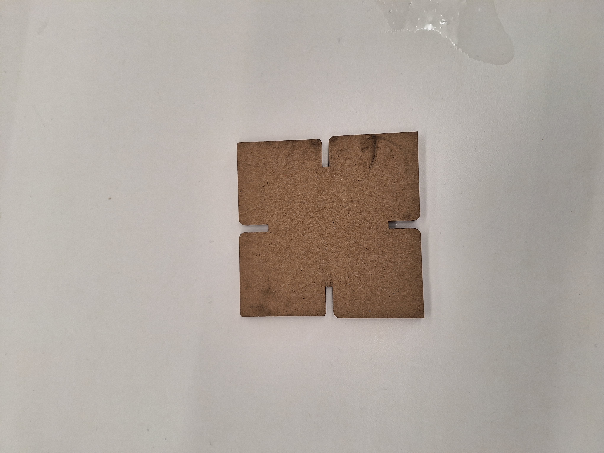
This is the end result of the pressfit assignment. I cut it out using the laser cutter. It smelled like burnt toast.
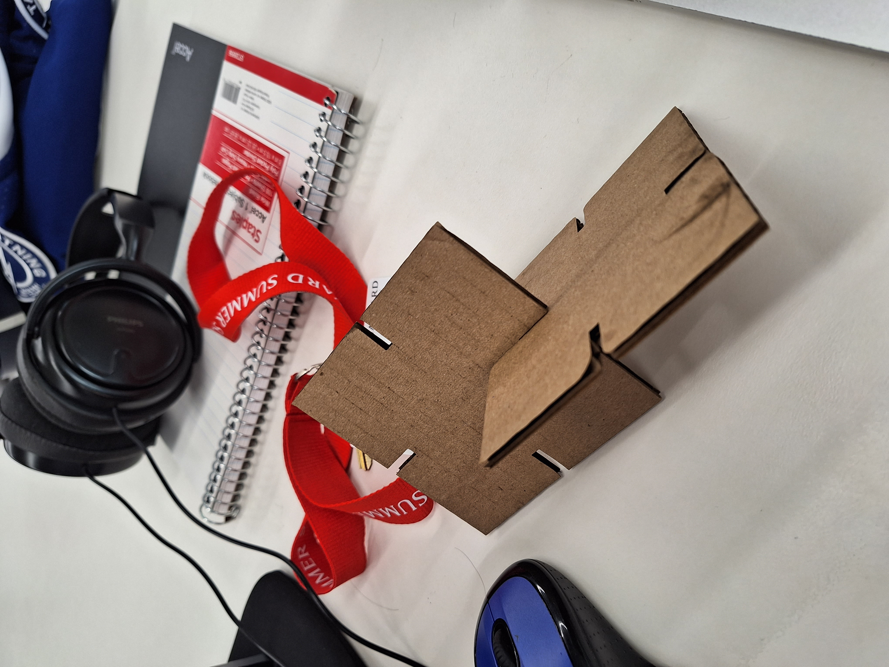
This shows how the pressfit cardboard pieces fit together (they fit!)